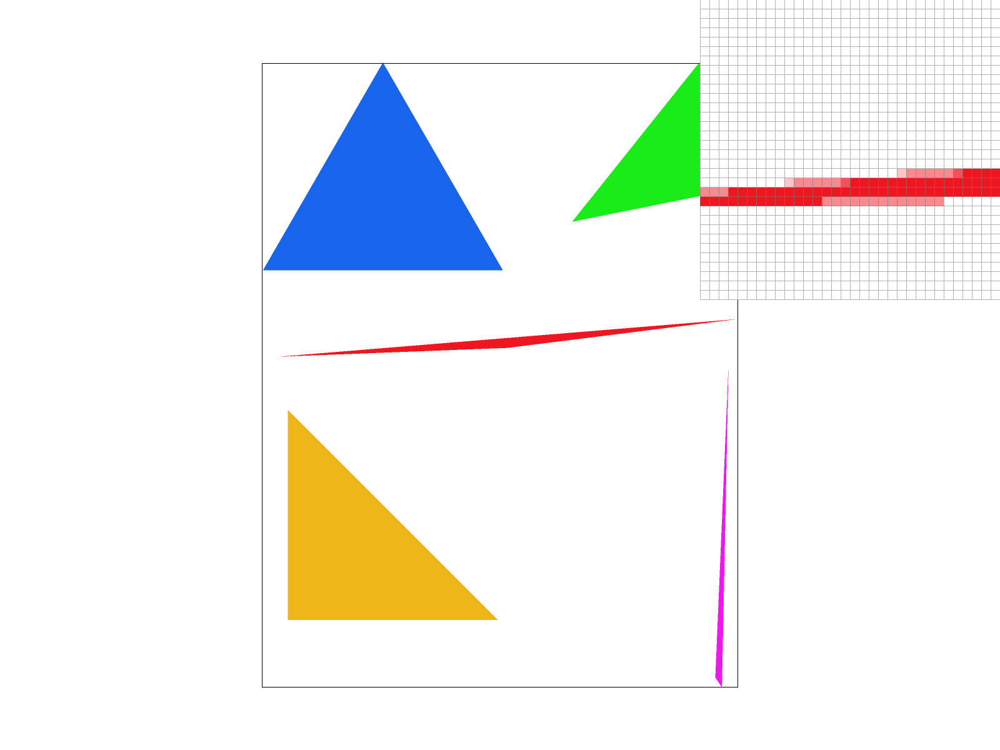
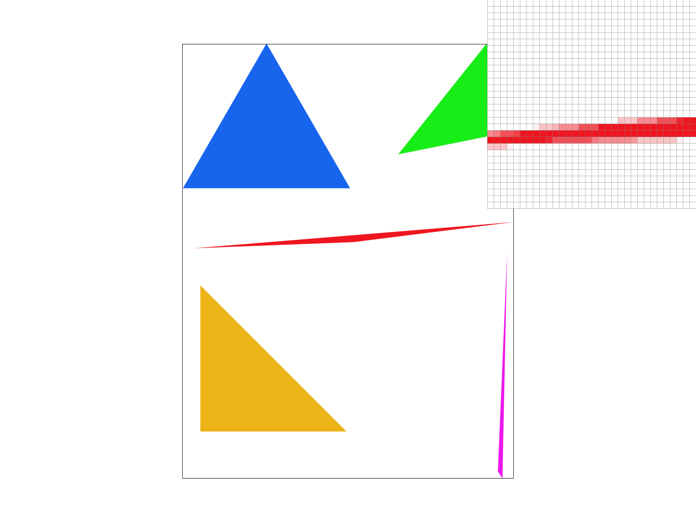
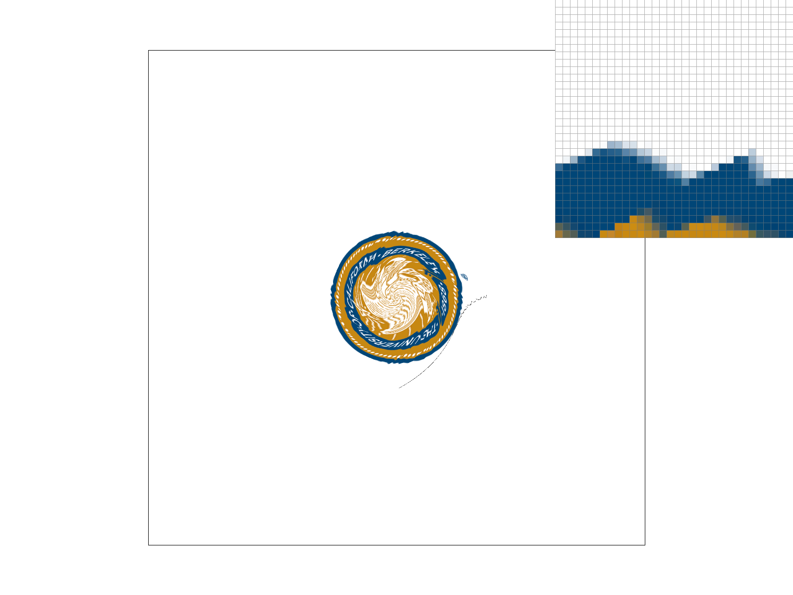

CS184/284A Spring 2025 Homework 1 Write-Up
James Rungsawang:
Link to webpage: https://cal-cs184-student.github.io/hw-webpages-borpaa/
Link to GitHub repository: https://github.com/cal-cs184-student/sp25-hw1-borpa
Overview
Give a high-level overview of what you implemented in this homework. Think about what you've built as a whole. Share your thoughts on what interesting things you've learned from completing the homework.Task 1: Drawing Single-Color Triangles
I rasterized the triangle using the technique covered in lecture. Basically for each point in the bounding box of the triangle, we check if it is inside all three half-planes generated by each edge of the triangle. A point is inside the right half-plane if the cross product of the vector from the tested point to the vector of the triangle edge is greater or equal to 0. We have to check the points in both clockwise and counter-clockwise orientation. This is no worse than an algorithm that checks each sample within the bounding box of the triangle because it is only checking the points inside the bounding box and then doing simple arithmetic operations such as subtraction and multiplication to check if the point's midpoint lies in the triangle.Task 2: Antialiasing by Supersampling
To modify my rasterization to implement supersampling, I would check a 2d grid to average for the color of a pixel rather than just checking one single point. For each point, we would now expand it to a grid of size sqrt(sample_rate) by sqrt(sample_rate) and check if the center of each cell in this grid is in the triangle to see if we should color it or not. Finally, we downscale by making each pixel filled in with the color of the average of that 2d grid. To implement these 2d grids, I used the flattened array provided to us called sample_buffer, and would index into it using the pixel row and column and which element in the grid we wanted. Supersampling is useful because it antialiases our triangles by bluring out the areas around the ends of the triangle This gives us much smoother transitions and reduces our amount of jaggies as we increase the sampling_rate.

|

|

|
Task 3: Transforms
I changed cubeman to raise both of his arms diagonally. I achieved this by wrapping the object that contains the entire arm with a rotation of 45 degrees for the left arm and -45 on the right arm. Then I just had to translate each arm a little bit in the x and y axis to get them aligned into the shoulder again.Task 4: Barycentric coordinates
Barycentric coordinates give us a way to interpolate color values for each point on a shape using the weighted contributions from each colored vertex based on distance. In our case below, we have three vertices colored red, green, and blue and each point will be a weighted colored sum based on its position relative to these vertices. The three weights for barycentric coordinates of a point must sum to 1 and tell us how much their corresponding vertex contributes its color to this pixel.Task 5: "Pixel sampling" for texture mapping
Pixel sampling is a way for us to determine what color value to give to a pixel when we're applying a texture to an object. We need to remap the screen coordinates of the pixels to the uv coordinates on the texture. The first method of pixel sampling used was nearest neighbor. This was easily implemented by converting the pixel position to the corresponding uv position on the texture and then just taking the color of the closest pixel. The better method was bilinear sampling which instead of just taking the closest neighbor, will fill the color of the pixel as a linear interpolation of the nearest four points in the texture. The method covered in class first gets the color of linearly interpolating the horizontal pairs and then combines those results to interpolate vertically. Bilinear sampling appears to be much smoother than the nearest neighbor sampling. This is probably because it interpolates on multiple points instead of just taking the nearest neighbor. I was unable to see any differences when changing sample rate. A large difference will be seen between the two methods when we have a low resolution image, are very zoomed in, and are dealing with a very jagged area of pixel coloring where it's a lot more obvious to see the lack of smoothness of nearest neighbor sampling.

|

|
|
|
|